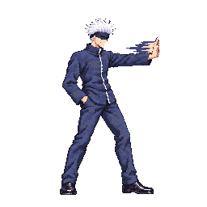
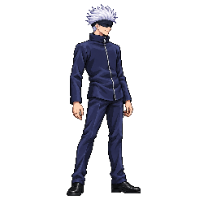
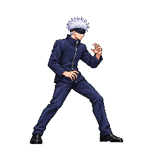
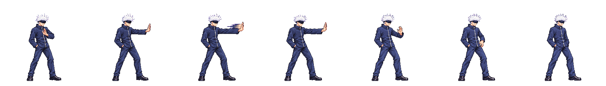
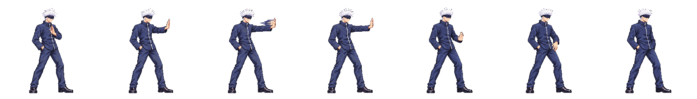
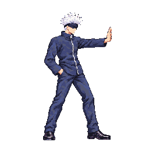

Character Art Audit #2 · B1
Gojo · light1 v08
User-approved drawing v08 via Claude relay audit2 #3: “Approve, keep reach.” This page compares approved v05 with selected v08 from the exact 48-color quantized atlas.
User-approved reach choice
The packed f2/f3 palm pixels stop at x196/x191, short of the original x206–226 move-brief target. The user approved v08 and chose to keep its current reach. Hitboxes remain aligned to the visible hand; the reach discrepancy is accepted as drawn.
required palm zone x206–226, y64–86visible hand pixelspacked hitbox
Approval status and measurements
Identity
Gojo likeness, white hair/blindfold, dark uniform; right hand stays pocketed.
Gojo likeness, white hair/blindfold, dark uniform; right hand stays pocketed.
Proportions
Body area median 0.922 of idle; head median 0.943. No scale-gate failure.
Body area median 0.922 of idle; head median 0.943. No scale-gate failure.
Motion
Seven frames, phases 2/2/3, durations unchanged.
Seven frames, phases 2/2/3, durations unchanged.
Decision
User approved v08 and chose to keep its current reach.
User approved v08 and chose to keep its current reach.
Generation inventory and packed evidence · Full scale sheet · Body comparison · Scale data
Approved style references



Approved v05 vs user-approved v08
Approved v05 · 7 packed frames

Candidate v08 · 7 packed frames

Each cell is a 256×256 crop from its packed atlas. Pixel display uses crisp scaling.Active-frame contact detail

Red shows the original brief target x206–226 / y64–86; the user chose to keep v08 reach. Cyan is the visible raster hand; yellow is the hitbox. Hitboxes: f2 [174,54,24,21], f3 [178,54,15,21].
Technical record
node tools/pack-sprites.mjs gojo --quantize 48: exit 0; 54 animations, 254 frames, 48 colors.- Scale report: 1 reference, 45 auto-pass, 8 manual, 0 flagged. Light1 head values: 0.914–0.963; feet proxy: 1.079–1.125.
- Body comparison: 0/1 strip flagged beyond the 12% advisory threshold; per-frame values 0.879–0.952.
- Atlas SHA-256:
93B73C1C7236FD23792EFE263D97D02431CA76A6C084B8C78D50019A819E9E67.
Visual approval does not clear the final Astra anatomy/scale audit or Claude runtime contact verification. No merge or production deployment is claimed.